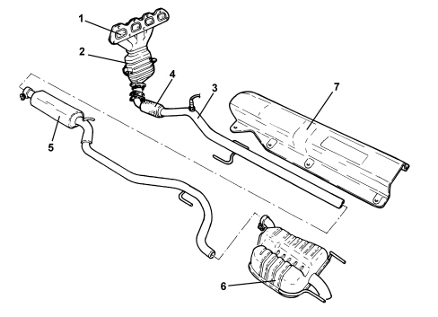

INTRODUCTION - EXHAUST PIPES AND SILENCERS
- Path
- Descriptions > 10 ENGINE > 1076 EXHAUST PIPES AND SILENCERS > INTRODUCTION - EXHAUST PIPES AND SILENCERS
- Kind
- system description
- Applies to
- engines: 1.8; all production periods
- Interactive page
- https://sloeber94.github.io/elrnDB-fCrm/en/#/194002280
Applies to: engines: 1.8; all production periods
CONSTRUCTION SPECIFICATIONS
The engine exhaust gases flow into manifold (1) integral with catalytic converter (2) and then on to the front section of exhaust pipe (3). There is a flexible element (4) in the front section of the exhaust pipe to restrict the transmission of vibrations. The rear exhaust pipe section consists of a silencer (5) connected to the rear silencer (6).
Special guards (7) prevent heat radiating toward the body and fuel tank.
The various components are supported by mounts and flexible rings secured to the underbody.
